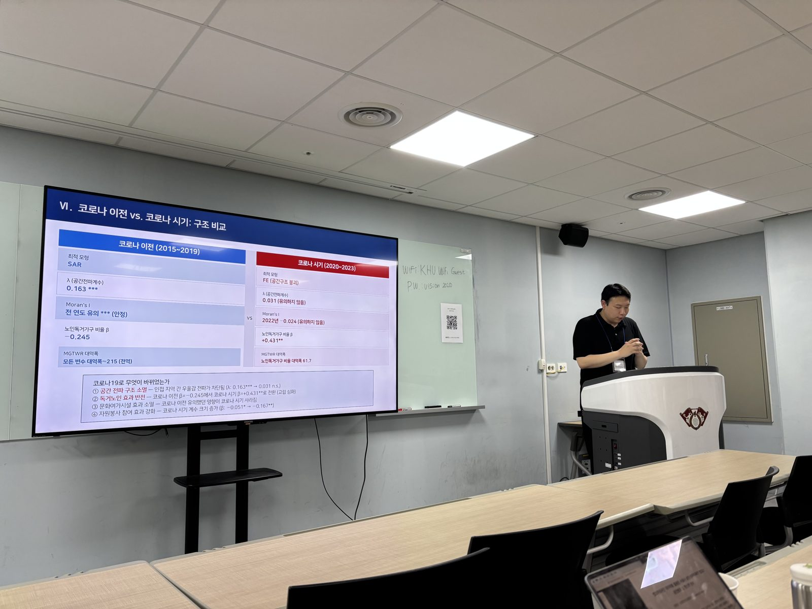
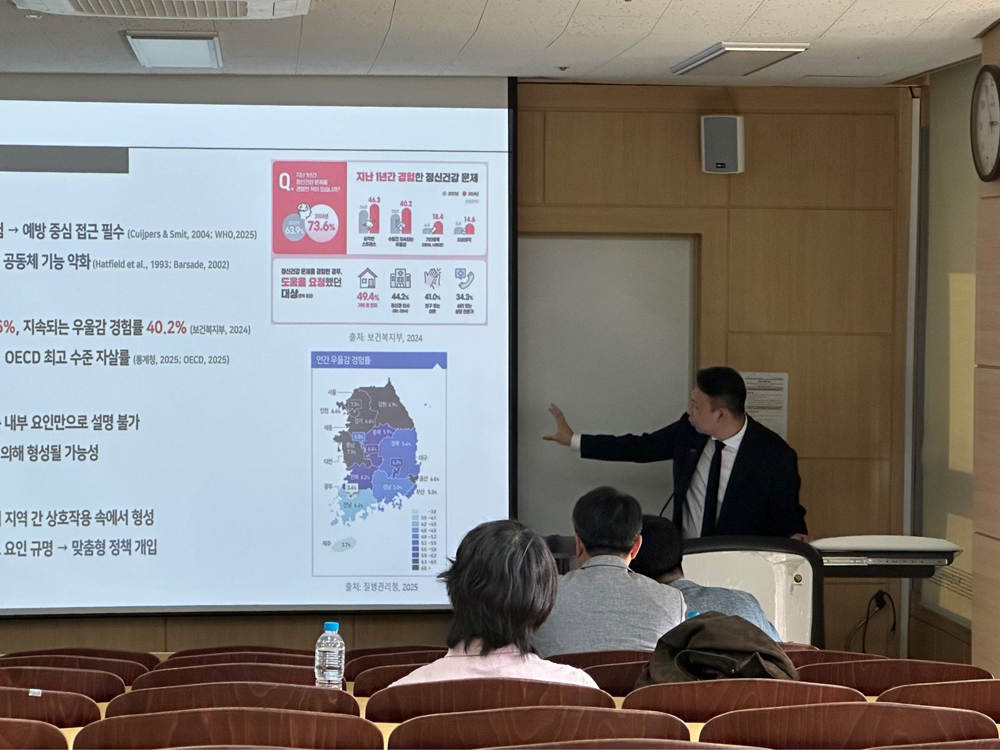

위성이 내려다본 밤의 한반도.
도시의 불빛 — 야간광은 그 자체로 우리 모델의 변수입니다.
The peninsula at night. City lights are themselves a variable in our models.
위성의 밤 위로, GeoAI가 데이터로 다시 그립니다 —
수도권 66개 시군구, 9년(2015–2023)의 우울감 기록.
Over the satellite night, GeoAI redraws the city from data.
팬데믹 시기(2020–2022), 우울감이 주변 지역과
함께 치솟았던 군집 — 붉은 핫스팟입니다.
지역을 클릭해 그 지역의 이야기를 열어 보세요.
Districts where depression clustered high during the pandemic — click any district.
위치 그 자체가 가장 큰 설명변수였습니다.
우리는 이렇게 도시와 지역을 읽습니다.
Location itself explains the most. This is how we read cities and regions.
위 분석은 연구실의 연구 사례 중 하나입니다.

2026년 한국지도학회 춘계학술대회 · 이재은·임창민 (국립공주대학교)

한국도시지리학회 2026년 춘계학술대회 · 이재은(제1저자)·임창민(교신저자)
KNU-GeoAI Lab은 공간 데이터에서 패턴을 찾고 그 원인을 규명합니다. 건강, 환경, 인구, 지역 문제 등 대상은 제한하지 않습니다. 분석 결과는 정책의 근거 자료로 제공됩니다.
KNU-GeoAI Lab identifies patterns in spatial data and investigates their causes — across health, environment, population, and regional issues.
책임교수 임창민은 도시지리학과 공간통계를 전공했으며, 현재는 GeoAI를 활용한 연구를 수행합니다.
Changmin Im specializes in urban geography and spatial statistics, and currently conducts research using GeoAI.
연구 주제는 특정 분야에 한정되지 않습니다. 감염병, 정신건강, 소아비만, 산림 생태, 환경 노출, 지방소멸 등 공간 데이터로 분석 가능한 문제를 폭넓게 다룹니다.
Topics are not limited to a single domain: infectious disease, mental health, childhood obesity, forest ecology, environmental exposure, and regional decline.
방법론으로는 공간통계, 공간 머신러닝, 인과추론, 설명가능한 AI(GeoAI)를 사용합니다. 공동연구와 대학원 진학 문의를 받습니다.
Methods include spatial statistics, spatial machine learning, causal inference, and explainable AI. Open to collaboration and graduate inquiries.
도시의 특성이 건강을 어떻게 만드는가 — 마약·우울증의 동반 확산(신데믹)부터 소아비만 건강격차, 감염병 확산 연구까지.
How urban characteristics shape health — from the coupled spread of illicit drugs and depression to childhood-obesity disparities and infectious disease.
공간 빅데이터를 읽는 방법 — 고유벡터 공간필터링에서 XGBoost·GeoShapley, 공간 인과추론, 설명가능한 AI, 지식그래프, 행위자 기반 모형까지.
Methods for reading spatial big data — from eigenvector spatial filtering toward spatial causal inference, explainable AI, knowledge graphs, and agent-based simulation.
도시·의료지리와 GeoAI를 함께 연구하는 사람들입니다. The people behind KNU-GeoAI Lab.
조교수 · 도시·의료지리, GeoAI
의료지리·공간통계 · 충남 우울증 시공간 분석
도시·의료지리, GeoAI에 관심 있는 대학원생을 환영합니다.
현재 수행 중인 연구 및 과제 — 책임연구원(PI) 또는 공동연구원으로 참여 중인 사업.
공간 인과추론 기반의 악순환 경로 규명 및 XAI 기반 위험 탐지 모형 개발. Spatiotemporal syndemic analysis of the compound crisis of drug and depression spread.
관계인구 지수의 개발, 지리적 지식그래프 기반 현황 분석, 행위자 기반 모형을 통한 지역 활성화 시뮬레이션.
Development and empirical study of intervention programs to reduce regional health disparities in childhood obesity.
농촌지역개발 소단위전공 교과과정 개발 및 지역정주형 인재양성 — 청년을 지역전문가로 성장시키는 리빙랩.